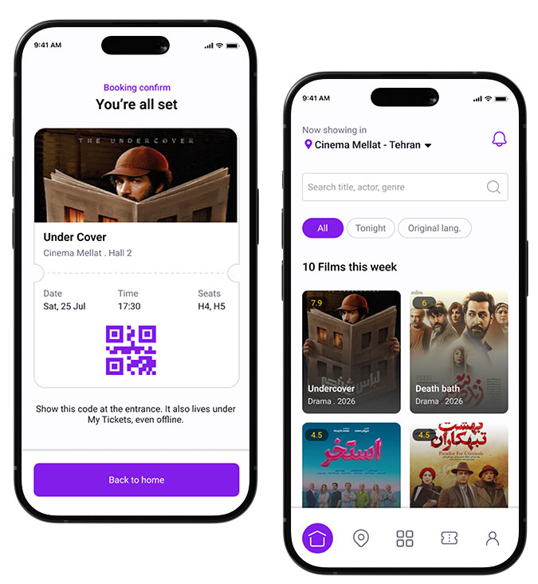
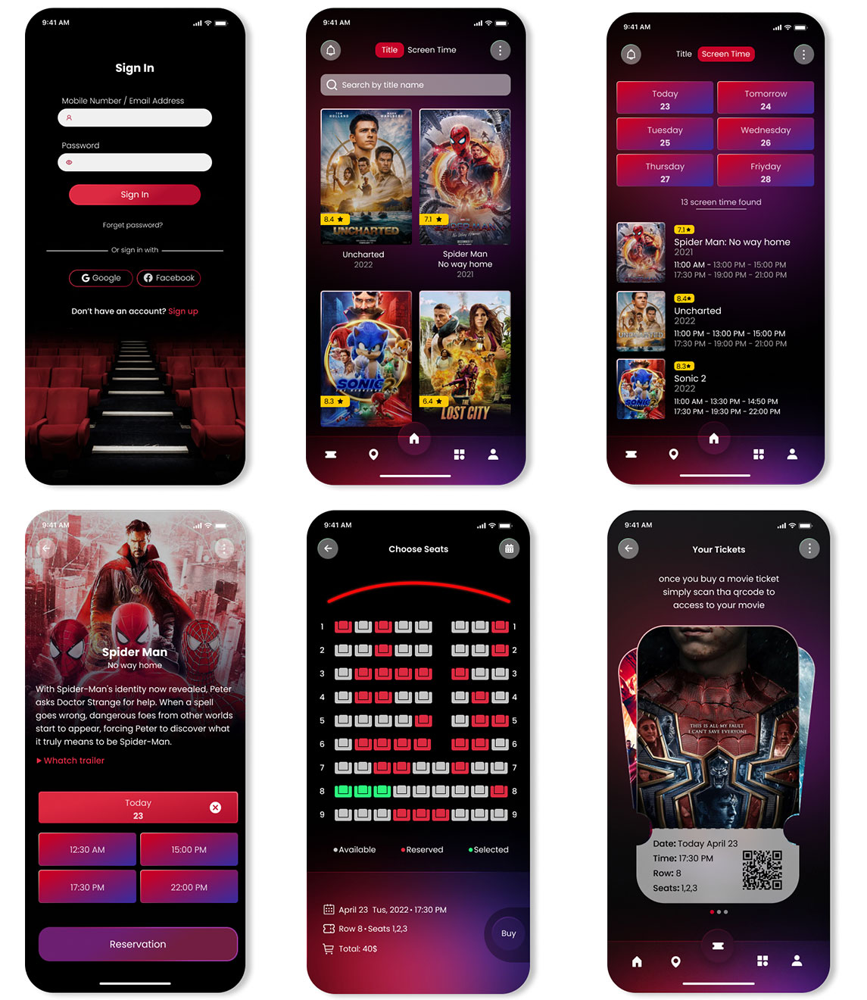
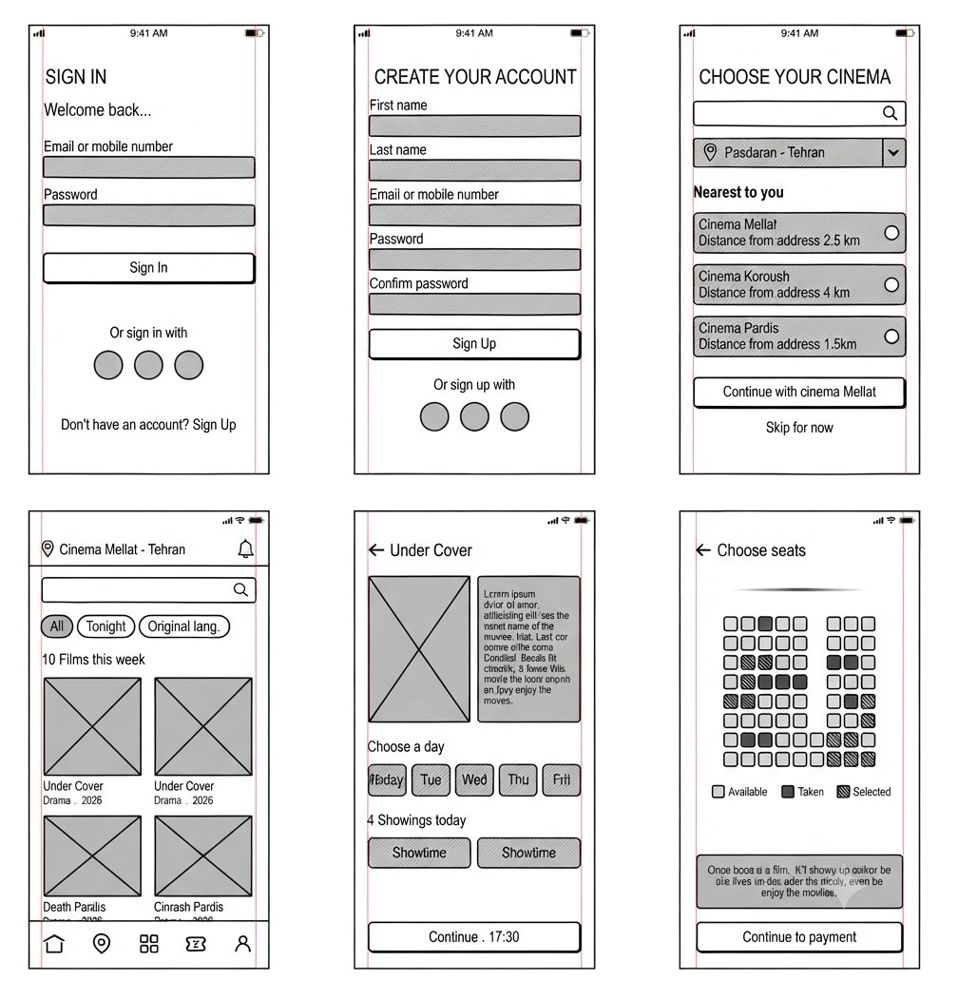
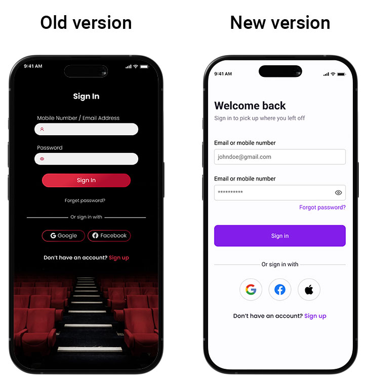
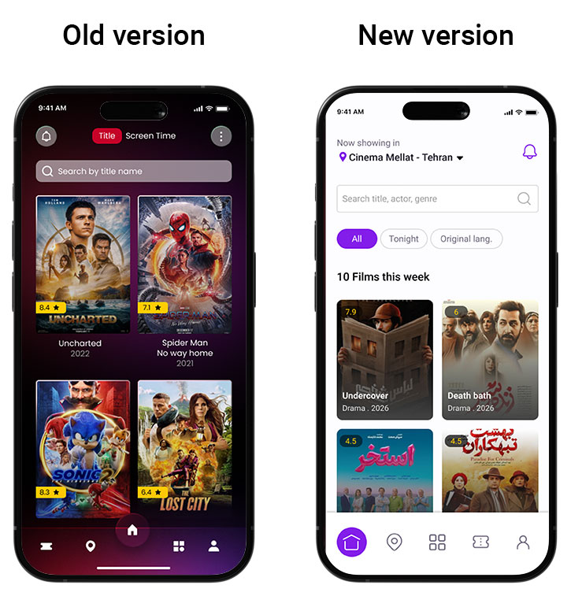
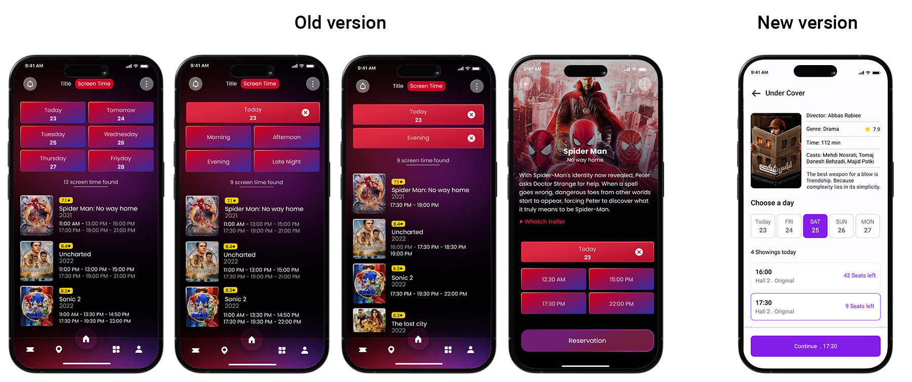
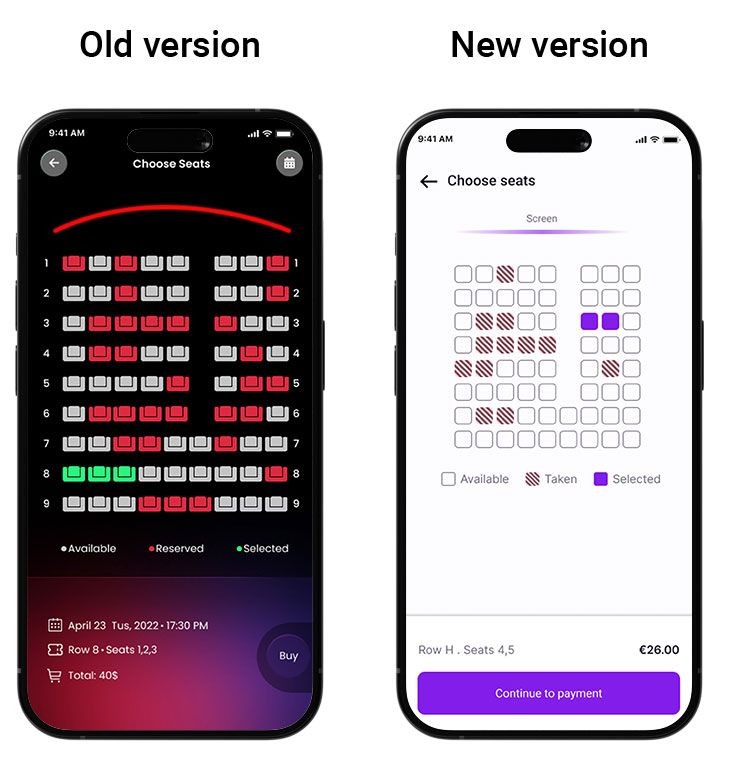
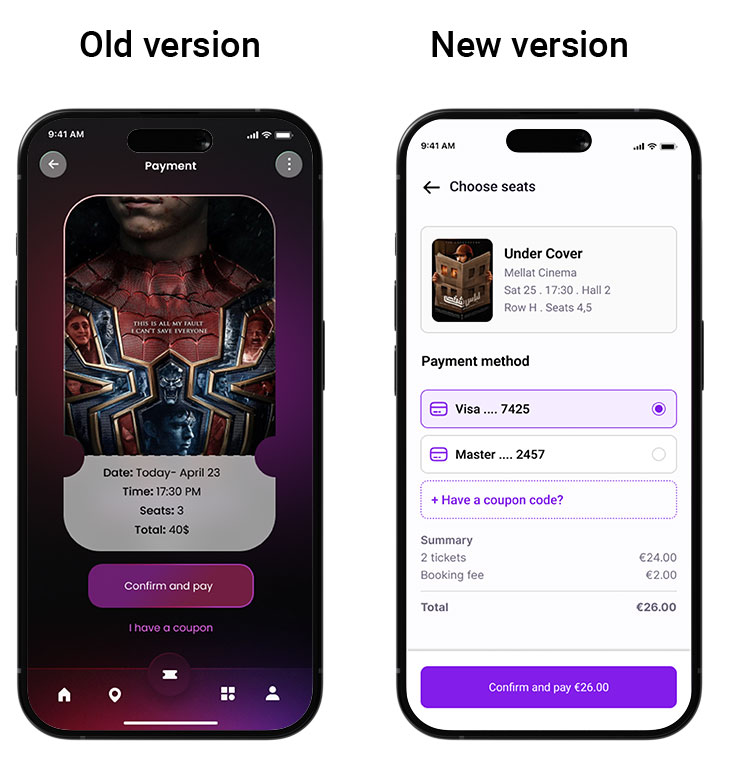
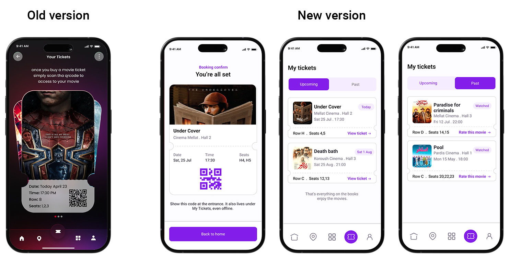
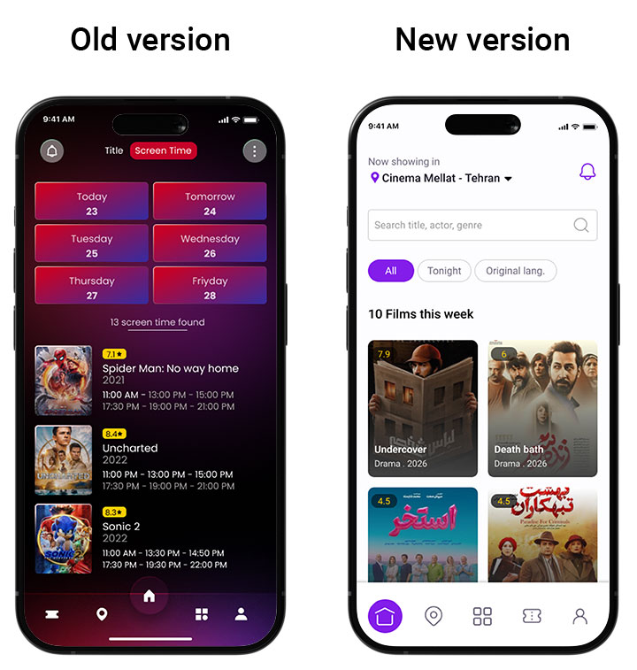

Gisheh
Redesigning a Movie Ticketing Flow
Role:
End-to-End UX/UI Design (Heuristic Evaluation, Research, Wireframing, Prototyping, Accessibility)
Tools:
Figma
Timeline:
2020

Project overview
Gisheh set out to redesign its ticketing app. Rather than starting from a blank canvas, this project began with a rigorous heuristic audit of the existing application: identifying severe usability breakdowns, addressing color-accessibility flaws, and architecting a cohesive, accessible design system.
Problem & Heuristic Audit
The original app covers a complete booking flow—sign in, browse, showtimes, seat selection, payment, and ticketing—but a heuristic evaluation surfaced five critical friction points:
- Colour used as the sole status signal (Accessibility flaw): On the seat map, available and reserved states shared near-identical shades of red, violating WCAG standards and creating visual confusion for color-blind users.
- Inconsistent visual hierarchy: Inconsistent typography cases and unlabelled groupings made the experience feel fragmented across different screens.
- Decorative imagery competing with content: High-contrast background imagery on input fields and payment cards severely degraded legibility.
- Unconventional navigation pattern: A floating, unlabelled mid-tab action button disrupted standard iOS/Android navigation paradigms.
- Lack of location-based discovery: Users had no capability to search or filter cinemas by city or proximity.

Goals
- Make every seat map state accessible and distinguishable using multi-cue indicators (shape, texture, and color) conforming to WCAG standards.
- Establish a standardized typography, tokenized color, and spatial grid system.
- Provide an accessible, cinema-first visual identity rather than a generic dark-mode template.
- Standardize bottom navigation to a predictable 5-tab pattern with clear spatial orientation.
Design Process
I initiated the project with a formal UX audit across four core screen sets, logging friction points against Nielsen’s 10 Usability Heuristics. From there, I built a lightweight design token system (color, type, spatial scale) to ensure cross-screen coherence before translating wireframes into polished high-fidelity layouts.
Wireframes
Blocking out layouts in low-fidelity grayboxes exposed structural issues early: revealing that showtimes needed combined day/time filtering and that seat maps required distinct fill patterns rather than color variations alone.

Design System & Accessibility
Built around a modern, light-theme interface with primary deep purple (#8F00FF) brand accents and strict contrast parameters:
Colour Tokens
- Background: Near-white (#FDFCFE) for optimal canvas legibility and light grey (#CCCCCC) for surface containers.
- Brand & Action: Deep purple (#8F00FF) reserved strictly for primary interactive triggers (buttons, active tabs, selected states).
- Accessible Seat Map States:
- Available: White fill with neutral grey stroke (unfilled).
- Selected: Solid brand purple (#8F00FF).
- Taken / Occupied: Solid dark grey (#757575) with diagonal hatch texture.
Typography & Hierarchy
- Primary Typeface: Roboto across all labels, UI copy, and numeric showtime/pricing metadata.
- Structured Heading Scale: Clear distinction between page titles, card headers, and secondary body metadata.
Accessible Interaction Patterns
- Unified Time Filtering: Day and showtime filters consolidated into a single dual-row control, keeping active filter parameters visible at a glance.
- Multi-Cue Seat Selection: Eliminates sole reliance on color by combining shape outlines, solid fills, and diagonal textures for full color-blind accessibility.

Screen-by-Screen Redesign
Sign In
- Problem: Dark theme with background imagery degraded form contrast.
- Change: Transitioned to a clean light UI (#FDFCFE) with high-contrast input borders and expanded social sign-in options (Google, Apple, Facebook).

Browse, Search & Location
- Problem: Fragmented search categories and absence of location-aware search.
- Change: Unified search bar with smart filter chips and geo-location sorting to display nearby cinemas by distance.

Showtimes & Seats
- Problem: Multi-step time selection hid showtime availability until late in the flow.
- Change: Exposed seat count metadata directly ("9 seats left") alongside consolidated date/time chips.

Accessible Seat Selection
- Problem: Red vs. grey seat fills lacked texture or multi-cue indicators for color-blind users.
- Change: Applied distinct strokes, solid purple fills, and diagonal hatched textures for instant accessibility.

Payment & Confirmation
- Problem: Overly complex payment breakdown and lack of explicit confirmation.
- Change: Introduced itemized cost breakdowns, selectable payment methods, and an explicit digital ticket card complete with an offline QR code.


Standardized Navigation
- Problem: Floating middle button created navigational ambiguity.
- Change: Replaced with a predictable 5-tab bottom navigation bar (Home, Cinemas, Movies, Tickets, Profile).

Key Outcomes
- 100% WCAG Color-Blind Accessibility: Re-engineered seat selection maps using shape, stroke, and texture indicators.
- Reduced Booking Friction: Consolidated showtime filters and introduced geo-location search to accelerate movie-to-checkout conversion.
- Scalable UI Kit: Created a modular design token system ensuring visual consistency across all key user touchpoints.
Reflection
The core challenge was balancing visual modernization with systematic UX audit principles. Grounding every design decision in Nielsen's Heuristics ensured that changes solved real user friction rather than serving aesthetic preferences alone. This case study demonstrates the impact of converting an inaccessible, fragmented flow into an intuitive, inclusive digital product.